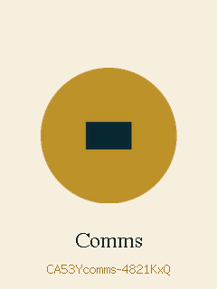
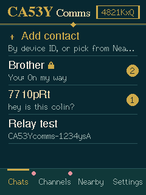
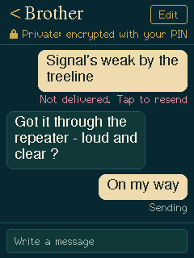
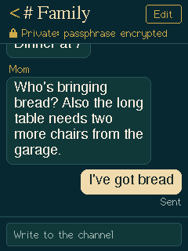
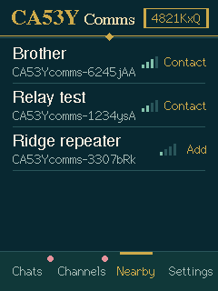
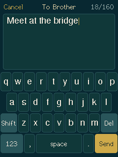

Flash your display
Plug the board into this computer with a USB-C data cable, then pick your screen version. Use Chrome or Edge on a desktop or laptop; Safari and Firefox can't talk to USB serial devices.
E32R28T
ILI9341 screen. Most boards sold as "2.8inch ESP32-32E Display", including 2024 stock. Try this one first.
E32R28T-1
ST7789 screen, 2025 boards. Pick this if the other one leaves the screen blank or the colors look like a photo negative.
No port shows up? Try another cable (many are charge-only), or install the CH340 USB driver for your computer.
After it boots
- Tap each arrow tip with the stylus to set up the touch screen.
- Type your name. It's shown to people you message.
- Open Nearby to see other CA53Y devices, tap one to add it, or add a contact by its 7-character ID.
- Set the same PIN on both devices to encrypt your messages. Without one, messages are open.
- Use Channels for group chats. Public is open to everyone; add a passphrase to make a private one.
Choosing "Erase device" during install wipes your name, contacts and channels. Leave it unchecked when you're only updating.






Range
Every CA53Y device repeats the messages it hears, so a message can hop through up to eight devices to reach someone out of direct range. A spare board on a windowsill or a hilltop makes a good repeater. Repeaters can't read encrypted messages.